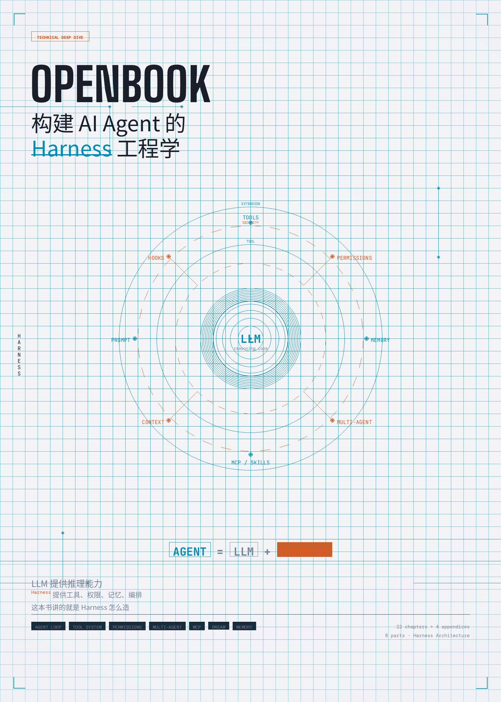

Disclaimer: This book is an independent educational analysis of AI agent architecture patterns. All code examples are pseudocode created by the authors for illustrative purposes. No proprietary source code is reproduced. Product names are used for reference only and belong to their respective owners.

🌐 Language: 中文 (当前) | English
📥 下载中文 PDF | 📥 Download English PDF
OpenBook: 构建 AI Agent 的 Harness 工程学
A comprehensive open-source book (26 chapters, 9 parts, 4 appendices) on building production-grade AI Agent Harnesses. Based on deep architecture analysis of large-scale Agent systems, this book reveals the design patterns behind tools, permissions, memory, multi-agent orchestration, MCP protocol, and cloud deployment. Referenced by 50+ industry sources including Anthropic, OpenAI, AWS, and LangChain.
Core thesis: Agent = LLM + Harness. The LLM provides reasoning (~1% of code). The Harness provides tools, permissions, memory, orchestration (~99% of code). This book teaches you how to build the Harness.
Key numbers: 26 chapters | 9 parts | 4 appendices | 40+ tool designs analyzed | 10 design principles | 89 compile-time feature flags | 148 environment variables documented | 6 architecture diagrams | 10 core TypeScript type definitions
Agent = LLM + Harness -- 这本书讲的是 Harness 怎么造
关于本书
为什么写这本书
2025 到 2026 年，AI Agent 经历了从概念到产品的爆发。OpenAI 的 Sam Altman 宣称「Agent 将成为 AI 的杀手级应用」；Anthropic CEO Dario Amodei 在《Machines of Loving Grace》中描绘了 Agent 深度参与软件工程的未来；Andrew Ng 在多次演讲中强调「Agentic Workflow 是释放 LLM 真正潜力的关键」——不是让模型一次性给出答案，而是让它像人类一样迭代：思考、行动、观察、调整。到了 2026 年，各种 Agent 产品（Cursor、Windsurf、Devin 等）已成为开发者的日常工具。Agent 的时代不是即将到来——它已经到来了。
但当我们打开一个真正的 Agent 产品的源码时，会发现一个令人惊讶的事实：LLM 本身只占代码量的极小部分。绝大多数代码在做另一件事——构建围绕 LLM 的运行时框架。
Andrej Karpathy 曾将 LLM 类比为「新的操作系统内核」。如果 LLM 是内核，那么工具系统是系统调用，权限模型是访问控制，上下文管理是内存管理，多 Agent 编排是进程调度。这整套包裹在 LLM 外层的基础设施，就是 Harness。
什么是 Agent Harness
"A model that can call tools and take actions is nice. A model wrapped in a harness that manages permissions, handles errors, preserves context, and coordinates with other agents -- that's a product."
业界对这一层有不同的称呼：Anthropic 的 "Building Effective Agents" 指南称之为 orchestration framework（编排框架）；LangChain 的 Harrison Chase 称之为 agent runtime（智能体运行时）；AWS Bedrock 的文档称之为 agent orchestration layer（智能体编排层）。本书统一使用 Harness（运行时框架）这个术语——它最准确地传达了「套在 LLM 外面的缰绳与工具」的含义。
核心主张：Agent = LLM + Harness。
+--------------------------------------------------+
| A G E N T |
| |
| +----------+ +-------------------------+ |
| | | | H A R N E S S | |
| | LLM | | | |
| | |<---->| 工具 | 权限 | 记忆 | |
| | (推理) | | 编排 | 扩展 | 上下文 | |
| | | | | |
| +----------+ +-------------------------+ |
| |
| ~1% 代码量 ~99% 代码量 |
+--------------------------------------------------+
LLM 提供推理能力，Harness 提供工具、权限、记忆、编排。这本书讲的就是 Harness 怎么造。
本书的切入点
2026 年的今天，Agent 框架遍地开花——LangChain、CrewAI、AutoGen、OpenAI Agents SDK、AWS Bedrock Agents......但绝大多数框架做的是编排层的抽象，告诉你怎么把工具串起来，却不告诉你框架本身是怎么造的。
本书不同。我们从生产级 Agent 系统的工程实践中，提炼出构建 Harness 的通用设计模式。这些模式覆盖了 Agent 工程的每一个关键维度：
| Agent 核心能力 | Harness 的设计模式 | 本书章节 |
|---|---|---|
| 规划与编排 | 协调者模式、多阶段编排、Plan Mode | Part V, Ch 13 |
| 记忆与状态 | 多层配置文件、类型化自动记忆、后台整合 | Part VI, Ch 17 |
| 工具使用 | 工具注册表、调度器、延迟 Schema 加载 | Part III, Ch 6-8 |
| 行动与执行 | Agent Loop、流式执行、错误恢复 | Part II, Ch 3-5 |
| 安全与约束 | 多层权限防线、ML 分类器、可编程 Hook | Part IV, Ch 9-11 |
| 多智能体协作 | 状态 fork/隔离/通信、Swarm、Mailbox 模式 | Part V, Ch 12-15 |
| 生态扩展 | MCP 协议、Skills 系统、Plugin 体系 | Part VII, Ch 18-20 |
| 云上部署 | 四支柱框架、双 Pod 沙箱、自修复循环 | Part IX, Ch 23-26 |
市面上讲 Agent 的书不少，但多数停留在 Prompt Engineering 和 API 调用的层面。本书要做的是打开黑箱——不是教你怎么用 Agent 框架，而是让你看清框架本身的骨架、肌理和设计取舍。这些模式不绑定特定产品，可以迁移到任何 Agent 系统的构建中。
本书的方法论
Anthropic 的 "Building Effective Agents" 指南开篇就说："The most successful implementations we've seen aren't using complex frameworks -- they're using simple, composable patterns."
本书遵循同样的理念。我们不是在罗列代码，而是在回答三个问题：
- 这部分要解决什么问题？ —— 每一节从真实的工程困境出发
- 设计者是怎么想的？ —— 为什么选这个方案而不是其他方案
- 代码是怎么做的？ —— 源码只是验证思路的证据，不是阅读的主体
OpenAI 的 Swarm 框架文档说："The best way to understand agents is to build one." 本书在 Appendix D 提供了一个从零构建 Mini Agent Harness 的实战教程——读完理论后动手验证。
谁应该读这本书
- AI 应用开发者——想构建自己的 Agent 产品，需要理解生产级 Harness 的设计模式
- 架构师——评估 Agent 框架时需要理解底层原理，而不只是看 API 文档
- LLM 研究者——想理解模型能力如何通过工程手段被放大（或约束）
- 对 AI Agent 好奇的技术人员——想超越 Demo 和 Prompt Engineering，看看真正的 Agent 是怎么运转的
你不需要读过该系统的源码才能理解本书。每章都从问题出发，用类比和叙事引导理解，源码引用作为佐证。但如果你对该 Agent 系统的架构有所了解，跟着章节阅读会获得更深的体验。
本书结构
全书 9 个部分，26 章，按 Agent 的概念层次从内到外展开：
Part I 什么是 Harness -- 建立心智模型
Part II Agent Loop -- 核心循环
Part III 工具系统 -- Agent 的手和脚
Part IV 安全与权限 -- Agent 的缰绳
Part V 多智能体 -- 从个体到团队
Part VI Prompt 与记忆 -- Agent 的灵魂和笔记本
Part VII 扩展机制 -- 开放的 Agent
Part VIII 前沿与哲学 -- 设计原则的提炼
Part IX 从理论到实践 -- OpenHarness 实战部署
每章末尾有思考题，引导读者将源码中的设计决策推广到自己的场景。
目录
Part I: 什么是 Agent Harness
| 章节 | 标题 | 核心问题 |
|---|---|---|
| Chapter 1 | 从 LLM 到 Agent：Harness 的角色 | LLM 缺什么？Harness 补了什么？ |
| Chapter 2 | 系统全景：一个 Agent 的解剖图 | 架构分层与数据流动 |
Part II: Agent Loop -- 循环的艺术
| 章节 | 标题 | 核心问题 |
|---|---|---|
| Chapter 3 | Agent Loop 解剖：一轮对话的完整旅程 | 从用户输入到最终回复发生了什么？ |
| Chapter 4 | 与 LLM 对话：API 调用、流式响应与错误恢复 | 怎么调 API？出错怎么办？ |
| Chapter 5 | 上下文窗口管理：有限记忆下的生存之道 | 对话太长怎么压缩？ |
Part III: 工具系统 -- Agent 的手和脚
| 章节 | 标题 | 核心问题 |
|---|---|---|
| Chapter 6 | 工具的设计哲学：接口、注册与调度 | 一个工具怎么设计和注册？ |
| Chapter 7 | 40 个工具巡礼：从文件读写到浏览器 | 每类工具的设计取舍 |
| Chapter 8 | 工具编排：并发、流式进度与结果预算 | 多工具怎么并行？结果太大怎么办？ |
Part IV: 安全与权限 -- Agent 的缰绳
| 章节 | 标题 | 核心问题 |
|---|---|---|
| Chapter 9 | 权限模型：三层防线的设计 | 四级权限如何协作？ |
| Chapter 10 | 风险分级与自动审批 | ML 分类器怎么判断安全？ |
| Chapter 11 | Hooks：可编程的安全策略 | 用户怎么自定义权限规则？ |
Part V: 多智能体 -- 从独行侠到团队
| 章节 | 标题 | 核心问题 |
|---|---|---|
| Chapter 12 | 子 Agent 的诞生：fork、隔离与通信 | 怎么创建和管理子 Agent？ |
| Chapter 13 | 协调者模式：四阶段编排法 | 多 Agent 如何分工协作？ |
| Chapter 14 | 任务系统：后台并行的基础设施 | 后台任务怎么创建和监控？ |
| Chapter 15 | Team 与 Swarm：群体智能的实现 | Team 怎么组建？消息怎么路由？ |
Part VI: System Prompt 工程
| 章节 | 标题 | 核心问题 |
|---|---|---|
| Chapter 16 | System Prompt 的组装流水线 | 静态 vs 动态？怎么缓存？ |
| Chapter 17 | 记忆系统全景：从文件发现到梦境整合 | 五层发现、四类记忆、自动提取、相关性检索、Dream 整合 |
Part VII: 扩展机制 -- 开放的 Agent
| 章节 | 标题 | 核心问题 |
|---|---|---|
| Chapter 18 | MCP：连接外部世界的协议 | 5 种传输、认证、工具发现 |
| Chapter 19 | Skills：用户自定义能力 | Skill 怎么加载和执行？ |
| Chapter 20 | Commands 与 Plugin 体系 | CLI 命令和插件怎么协作？ |
Part VIII: 前沿与哲学
| 章节 | 标题 | 核心问题 |
|---|---|---|
| Chapter 21 | Dream 系统：会「睡觉」的 Agent | 后台记忆整合怎么实现？ |
| Chapter 22 | 设计哲学：构建可信 AI Agent 的原则 | 10 条通用 Agent 设计原则 |
Part IX: 从理论到实践 -- OpenHarness
| 章节 | 标题 | 核心问题 |
|---|---|---|
| Chapter 23 | 四根支柱：从 Harness 模式到部署架构 | 前 22 章的模式如何映射到 CONSTRAIN / INFORM / VERIFY / CORRECT？ |
| Chapter 24 | 沙箱与安全：在云上约束 Agent | 双 Pod 沙箱如何用 K8s NetworkPolicy 实现最小权限？ |
| Chapter 25 | 自修复循环：让 Agent 从失败中学习 | CI 失败后如何自动检测、修复、重试、升级？ |
| Chapter 26 | 从零部署：你的第一个 Agent Harness | 双 Agent 模式 + 任务队列 + 成本模型的完整部署 |
附录
| 附录 | 标题 | 内容 |
|---|---|---|
| Appendix A | 架构总览图与数据流图 | 6 张 ASCII 架构图 |
| Appendix B | 关键类型定义速查 | 10 个核心 TypeScript 类型 |
| Appendix C | Feature Flag 完整清单 | 89 编译时 + 18 运行时 + 41 环境变量 |
| Appendix D | 从零构建 Mini Agent Harness | 100 行代码实战教程 |
统计
- 26 章 + 4 附录 = 30 个文件
- 基于对大规模 TypeScript 代码库的深度架构分析
- Part I-VIII 聚焦 Harness 内部设计模式
- Part IX 展示如何用开源组件将模式落地到 AWS 云平台
- 每章对应具体架构模块和设计决策
- 每章附 思考题
- 引用 50+ 权威来源，包括 Anthropic、OpenAI、AWS、LangChain、Andrew Ng 等
参考来源
详见 参考文献
FAQ
What is an AI Agent Harness?
An Agent Harness is the runtime infrastructure that wraps around a Large Language Model (LLM) to create a production-grade AI Agent. It includes tool systems (40+ tool designs analyzed in this book), permission models (4-layer security with ML classifiers), memory management (5-layer discovery with 4 memory types), multi-agent orchestration (fork/isolate/communicate patterns), and error recovery mechanisms. According to our analysis of production Agent systems like Claude Code, Cursor, and Devin, the Harness constitutes approximately 99% of the codebase while the LLM integration is only about 1%. As Andrej Karpathy noted, if the LLM is the "new OS kernel," then the Harness is the entire operating system built around it.
How is this book different from other AI Agent resources?
Most resources on AI Agents focus on Prompt Engineering and API usage -- teaching you how to use Agent frameworks. OpenBook goes deeper: it opens the black box of Agent frameworks themselves, revealing the design patterns used in production systems. The book covers 26 chapters across 9 parts, analyzing patterns from tool registration and scheduling, to multi-agent coordination (Swarm, Mailbox patterns), to MCP protocol internals (5 transport types, authentication, tool discovery), to cloud deployment with dual-Pod sandboxes on Kubernetes. As Anthropic's "Building Effective Agents" guide states: "The most successful implementations aren't using complex frameworks -- they're using simple, composable patterns." This book catalogs those patterns.
Who should read OpenBook?
OpenBook is designed for: (1) AI application developers building Agent products who need production-grade Harness design patterns, (2) Software architects evaluating Agent frameworks like LangChain, CrewAI, or AutoGen who need to understand underlying principles beyond API docs, (3) LLM researchers interested in how model capabilities are amplified (or constrained) through engineering, and (4) Technical professionals who want to understand how real AI Agents (Cursor, Claude Code, Devin) actually work beyond demos. No prior knowledge of any specific Agent system's source code is required.
What is the MCP Protocol covered in this book?
The Model Context Protocol (MCP) is an open standard for connecting AI Agents to external tools and data sources. Chapters 18-20 provide a deep dive covering 5 transport types (stdio, HTTP+SSE, WebSocket, etc.), authentication mechanisms, tool discovery protocols, the Skills system for user-defined capabilities, and the Commands/Plugin architecture. This is one of the most comprehensive technical analyses of MCP available in book form.
Can I deploy what I learn?
Yes. Part IX (Chapters 23-26) is entirely focused on practical deployment. It covers the Four Pillars framework (CONSTRAIN/INFORM/VERIFY/CORRECT), dual-Pod sandbox architecture using Kubernetes NetworkPolicy for least-privilege isolation, self-healing loops for automatic failure detection and recovery, and a complete deployment guide for your first Agent Harness on AWS. Appendix D provides a hands-on 100-line code tutorial to build a Mini Agent Harness from scratch.
Keywords
AI Agent Agent Harness Agent Framework Agent Architecture LLM Large Language Model Multi-Agent MCP Protocol Model Context Protocol Agent Security Agent Tools Agent Memory Agent Orchestration AWS Bedrock Kubernetes Claude Code Cursor Devin LangChain CrewAI AutoGen OpenAI Agents SDK Agent Design Patterns Production AI Agent Loop Tool System Permission Model Swarm Skills System